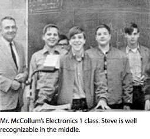

The book is described as "[chronicling] the roller-coaster life and searingly intense personality of a creative entrepreneur whose passion for perfection and ferocious drive revolutionized six industries: personal computers, animated movies, music, phones, tablet computing, and digital publishing."
In just over 600 pages, the book covers Jobs' entire life, from his childhood in his adoptive parents' home in California to his three bouts with pancreatic cancer. Early chapters include one on his relationship with Steve Wozniak and Jobs' brief stint at Hewlett-Packard, Reed College, Atari, and a formative trip to India to find himself. A chapter each is devoted to the development of the Apple I, Apple II, Lisa, and the classic Macintosh during his early years, the founding of NeXT and funding of Pixar when he was ousted from Apple, and Jobs' triumphant and incredibly productive return to Apple starting in 1997. Following the latter "second coming" of Jobs, Isaacson chronicles the development

of the iMac, iPod, iTunes, Apple Stores, and iPad.
Jobs' abrasive personality, which simultaneously inspired and intimidated those around him, is a recurrent theme throughout. Details of his personal life are also included, including early relationships, his marriage of twenty years, and his four children and his early life.
Youth
The jobs family
Steve Jobs was born on February 24, 1955, in the city of San Francisco. His biological mother was an unwed graduate student named Joanne Simpson, and his biological father was either a political science or mathematics professor, a native Syrian named Abdulfattah John Jandali.
Being born out of wedlock in the puritan America of the 1950s, the baby was put up for adoption. Joanne had a college education, and she insisted that the future parents of her boy be just as well educated. Unfortunately, the candidates, Paul and Clara Jobs, did not meet her expectations: they were a lower-middle class couple that had settled in the Bay Area after the war. Paul was a machinist from the Midwest who had
not even graduated from high school. In the end, Joanne agreed to have her baby adopted by them, under the firm condition that they later send him to college.
Paul and Clara called their new son Steven Paul. While Steve was still a toddler, the couple moved to the Santa Clara county, later to be known as Silicon Valley. They adopted another baby, a girl called Patti, three years later in 1958.
Childhood
 Steve was quite a turbulent child. He really didn’t care about school for
some time — until he reached the 4th grade, and had Imogene “Teddy” Hill as a teacher.
Steve was quite a turbulent child. He really didn’t care about school for
some time — until he reached the 4th grade, and had Imogene “Teddy” Hill as a teacher.
She did bribe him, with candy and $5 bills from her own money. He quickly became hooked — so
much so that he skipped the 5th grade and went straight to middle school, namely Crittenden Middle School. It was in a poor area. Most kids did not work much there, they were rather fond of bullying other kids, such as the young Steve. One day he came home and declared that if he wasn’t transferred to another school, he would stop going to school altogether. He was 11. Paul and Clara complied, and the Jobses moved to the cozier city of Los Altos, so that Steve could go to Cupertino Junior High. This proved to be decisive for Steve’s future.
As Steve was growing up in Los Altos, he became increasingly curious about the world of electronics that filled his neighbors’ garages. His own father introduced him to Heathkits, which fascinated him.
Homestead High
When Steve arrived in Homestead High School, he enrolled in a popular electronics class. His teacher was
Mr. McCollum. McCollum later recalled of one time when his pupil Steve called up David Hewlett himself, co-founder of HP, to get spare parts for his homework, and even a summer job at HP’s factory. Steve’s entrepreneurial skills showed up early in his life indeed.
 At Homestead, Steve befriended Bill Fernandez, a neighbor who shared his interests in electronics. It was Bill who first introduced him to another computer whiz kid, an older guy named Stephen Wozniak, or — as everybody used to call him — Woz. Steve and Woz met in 1969, when they were respectively 14 and 19. At the time, Woz was building a little computer board with Bill Fernandez that they called “the Cream Soda Computer”.